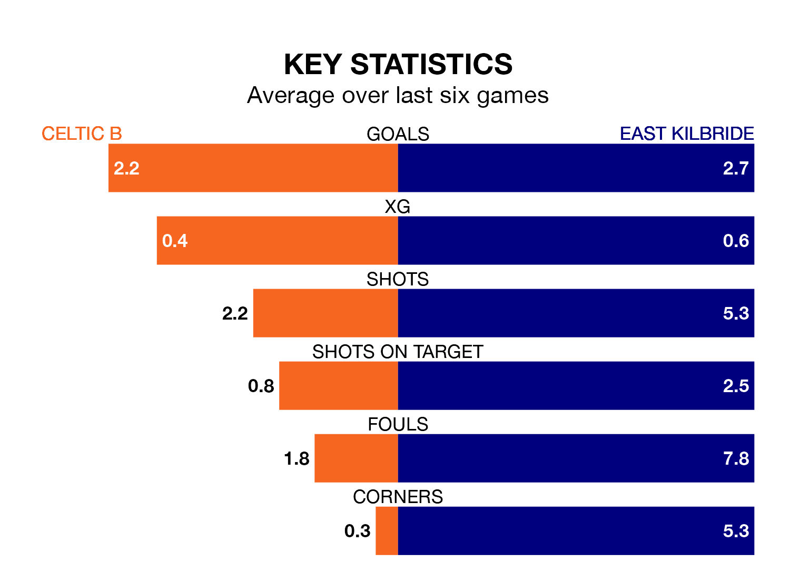

Highland and Lowland Football Leagues's top two sides face each other at the Excelsior Stadium in Saturday's kick-off, when zero-placed Celtic B host East Kilbride.
Celtic B have picked up seven wins and two draws from 16 games so far this season, and sit 21 points below the visitors going into the 3pm match.
The Kilby, meanwhile, have won 14 and drawn two of 17, picking up 44 points.
With 54 goals in 17 games so far this season, East Kilbride are the league's highest scorers with 3.2 goals per game. And they are conceding fewer than average, letting in 20 goals at a rate of 1.2 per game.
Celtic B are also above average scorers, with 2.0 goals per game, compared to a league average of 1.7. They have conceded 1.3 goals per game.
The home team are in mixed form in Highland and Lowland Football Leagues, with three wins and a draw from their last six games.
With five wins and one loss over that period, the Kilby's form is better – they have taken 15 points from 18, compared to Celtic B's 10.
Over the last year, Celtic B and East Kilbride have played each other on three occasions. East Kilbride won two of them and they drew once.
Their last meeting was on August 22, when East Kilbride won 2-1 at home.
Celtic B's last match was on December 9, a 3-3 draw against Cowdenbeath, with MacKenzie Carse (two) and Rocco Vata getting the goals for Celtic B.
East Kilbride beat Gala Fairydean Rovers 4-2 last time out, also on December 9, with Scott Ferguson (three) and Nathan Flanagan on the scoresheet.
